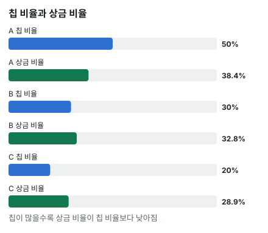

안녕하세요. I17에서 푸시/폴드를 칩 기준으로 계산했죠. 칩 기준은 "칩을 딸수록 그만큼 좋다"고 봐요. 칩 1000개를 따면 1000개만큼, 잃으면 1000개만큼이요.
그런데 토너먼트에서 우리가 실제로 받는 건 칩이 아니라 상금이에요. 칩을 상금으로 바꾸는 순간, 같은 1000칩이라도 누가 들고 있느냐에 따라 값이 달라져요. 오늘은 그걸 직접 계산하는 ICM을 처음부터 해 볼게요.
이 글에서 배울 것
- ICM으로 등수 확률과 기대 상금을 손으로 직접 구하는 법
- 이 조건에서 스택이 클수록 칩 1개가 올려 주는 상금이 줄어드는 이유
- 칩 기준으로 본전인 동전 던지기가 ICM으로는 손해가 되는 원리
1단계. ICM이란?
한 줄 정의
ICM = 지금 스택으로 각 등수에 들 확률을 구하고, 등수별 상금에 곱해 더한 기대 상금이에요.
등수 확률은 이렇게 구해요. 칩 비율대로 1등을 뽑고, 그 사람을 뺀 나머지 중에서 다시 칩 비율대로 2등을 뽑고, 이렇게 끝까지 가요. 뚝섬 AOF 차트 엔진이 쓰는 것과 같은 모형이에요.
비유: 천장과 바닥이 있는 저금통
ICM의 상금은 천장과 바닥이 있는 저금통과 같아요. 칩을 아무리 많이 모아도 1등 상금(천장)보다 더 받을 수는 없어요. 그리고 오늘 조건(남은 3명 모두 입상)에서는 칩이 아무리 적어도 3등 상금(바닥)은 받아요.
이게 무슨 뜻이냐면, 칩이 늘수록 천장에 가까워져서 칩이 올려 줄 수 있는 상금이 점점 줄어요. 바닥은 칩이 0이어도 받는 몫이라, 칩의 값을 따질 때는 빼고 봐요(3단계). 결국 칩과 상금이 같은 비율로 움직이지 않는 거예요.
2단계. 오늘의 장면 (조건 고정)
- 3명 남음, 상금은 1등 50, 2등 30, 3등 20(상금 합계 100, 예시 단위)
- 스택은 A 5000, B 3000, C 2000(칩 합계 10000)
- 블라인드·앤티·포지션은 빼고 칩만 보는 예시예요. 올인 승률은 딱 50%로 가정해요
B의 등수 확률을 손으로
1등 확률: 칩 비율 그대로예요.
3000 ÷ 10000 = 0.3, 즉 30%
2등 확률: 누가 1등이 되느냐에 따라 나눠서 세요.
- A가 1등(50%)이면 남은 사람은 B 3000 + C 2000 = 5000칩이에요. 그중 B 몫은 3000 ÷ 5000 = 0.6
- C가 1등(20%)이면 남은 사람은 A 5000 + B 3000 = 8000칩이에요. 그중 B 몫은 3000 ÷ 8000 = 0.375
2등 확률 = 0.5 × 0.6 + 0.2 × 0.375 = 0.3 + 0.075 = 0.375, 즉 37.5%
3등 확률: 나머지 전부예요. 1 − 0.3 − 0.375 = 0.325, 즉 32.5%
B의 기대 상금
B 기대 상금 = 0.3 × 50 + 0.375 × 30 + 0.325 × 20 = 15 + 11.25 + 6.5 = 32.75
같은 방법으로 세 명을 다 구하면 이래요.
| 선수 | 스택 | 칩 비율 | ICM 기대 상금 | 상금 비율 |
|---|---|---|---|---|
| A | 5000 | 50% | 약 38.39 | 약 38.4% |
| B | 3000 | 30% | 32.75 | 32.75% |
| C | 2000 | 20% | 약 28.86 | 약 28.9% |

이게 무슨 뜻이냐면
칩이 가장 많은 A는 칩 비율보다 상금 비율이 작고, 가장 적은 C는 크게 받아요. 칩 기준이었다면 A가 상금의 절반을 가져갔겠지만, ICM으로는 그보다 적어요.
3단계. 칩 1000개의 값을 스택마다 비교하기
여기가 제목의 답이에요.
세 사람 모두 바닥(3등 상금 20)은 받으니, 칩이 실제로 사 주는 몫은 기대 상금에서 20을 뺀 부분이에요. 그걸 칩 1000개당으로 나눠 볼게요. 이건 바닥 위 몫을 칩 수로 나눈 평균 값이에요. 평균이 스택마다 다르다는 것만으로도 칩 값이 같지 않다는 게 보여요. 칩을 더 따거나 잃을 때의 값은 4단계에서 직접 봐요.
| 선수 | 바닥 위 몫 | 칩 1000개당 |
|---|---|---|
| A (5000) | 38.39 − 20 = 18.39 | 18.39 ÷ 5 = 3.68 |
| B (3000) | 32.75 − 20 = 12.75 | 12.75 ÷ 3 = 4.25 |
| C (2000) | 28.86 − 20 = 8.86 | 8.86 ÷ 2 = 4.43 |
스택이 클수록 칩 1000개가 사 주는 상금이 줄어요. 같은 1000칩인데 C 손에서는 4.43, A 손에서는 3.68이에요. 이게 "칩 1개의 가치가 같지 않다"는 말의 정확한 뜻이에요.
4단계. 칩 기준으로 본전인 동전 던지기
B가 C와 올인 대결을 해요. 승률은 딱 50%, 걸린 칩은 C의 2000이에요.
칩 기준으로는 본전
이기면 3000 + 2000 = 5000, 지면 3000 − 2000 = 1000이에요. 평균은 (5000 + 1000) ÷ 2 = 3000, 지금 스택과 같으니 본전이에요.
ICM으로는
- 이기면 (A 5000, B 5000, C 탈락해서 3등 상금 20) → B 40
- 지면 (A 5000, B 1000, C 4000) → B 약 24.67
평균 = 0.5 × 40 + 0.5 × 24.66667 = 20 + 12.33333 = 약 32.33
지금 32.75보다 낮아요.
따는 몫과 잃는 몫
이기면 40 − 32.75 = 7.25 늘고, 지면 32.75 − 24.66667 = 약 8.08 줄어요
같은 2000칩을 걸었는데 잃는 2000칩이 따는 2000칩보다 비싸요. 3단계 표와 같은 이야기예요. B가 3000에서 5000으로 올라가는 구간은 천장에 가까워 칩이 덜 비싸고, 1000으로 내려가는 구간은 칩 하나하나가 더 비싸요.
사라진 몫은 어디로 갔을까
B의 평균이 32.75에서 약 32.33으로 줄었는데, 상금 합계는 늘 100이에요. 그 차이는 가만히 있던 A에게 가요. A는 지금 38.39인데, B가 이기면 40, 지면 38.89로 어느 쪽이든 올라가요. 두 사람이 싸우면 구경하던 사람이 이득을 보는 거예요.
왜 그럴까: 상금이 등수로 나뉘면 칩은 "곡선"이 돼요
칩 기준은 직선, ICM은 휘어진 곡선
칩 기준에서는 칩과 가치가 직선이에요. 2000칩을 따면 2000만큼, 잃으면 2000만큼이라 50% 동전 던지기는 늘 본전이죠.
ICM에서는 그 선이 위로 볼록하게 휘어요. 칩이 적을 때는 칩 하나가 상금을 많이 올리고, 칩이 많을 때는 덜 올려요. 휘어진 선 위에서 같은 거리를 오르내리면, 내려갈 때 잃는 높이가 올라갈 때 얻는 높이보다 커요. 그래서 50% 대결의 평균이 지금보다 낮아져요.
왜 휘어질까: 등수 확률로 직접 보기
4단계의 B를 등수 확률로 다시 볼게요.
| B의 등수 확률 | 지금 (3000) | 이기면 (5000) | 지면 (1000) |
|---|---|---|---|
| 1등 | 30% | 50% | 10% |
| 2등 | 37.5% | 50% | 약 16.7% |
| 3등 | 32.5% | 0 | 약 73.3% |
1등 확률은 이기면 0.5 − 0.3 = 0.2 오르고, 지면 0.3 − 0.1 = 0.2 내려가요. 위아래로 똑같이 움직여요. 칩 비율 그대로니까요.
그런데 2등 확률은 달라요. 이기면 0.5 − 0.375 = 0.125 오르는데, 지면 0.375 − 0.16667 = 0.20833 내려가요. 지는 쪽에서 더 많이 빠져요. 이기면 남은 상대가 A 한 명이라 2등이 최대 50%에서 막히고, 지면 칩이 바닥나 2등 경쟁에서도 크게 밀리거든요.
그래서 1등 몫은 ±10으로 같은데 2등 몫이 이기면 0.125 × 30 = 3.75 오르고, 지면 0.20833 × 30 = 6.25 내려가요. 이 차이가 따는 7.25와 잃는 약 8.08의 차이를 만들어요. 상금이 2등·3등으로 나뉘어 있어서 생기는 휘어짐이에요.
그래서 ICM이 바꾸는 것
이 조건에서 ICM은 칩을 잃지 않는 것에 무게를 더 실어요. 칩 기준으로 아슬아슬한 올인이나 콜은 ICM으로는 손해가 될 수 있어요. 얼마나 더 이겨야 하는지는 E11·E12에서 계산해요.
자주 하는 실수
실수 1. "칩 비율 = 상금 비율" 칩의 절반을 가진 A의 몫을 상금 절반(50)으로 생각하기 쉬워요. 실제 ICM으로는 약 38.39로, 칩 비율 50%보다 한참 작은 약 38.4%예요. 그러니 토너먼트 후반에는 칩 수를 상금으로 한 번 바꿔서 생각해야 해요.
실수 2. "50% 대결은 본전이니 받아도 된다" 칩 기준으로는 본전이었지만, ICM으로 B의 평균은 32.75에서 약 32.33으로 줄었어요. 따는 몫 7.25보다 잃는 몫 약 8.08이 컸거든요. 바르게 보려면 "이기면 얼마 늘고, 지면 얼마 줄어드나"를 따로 구해 비교해요.
실수 3. "내가 안 싸우면 내 몫도 그대로다" B와 C가 싸우는 동안 A는 아무것도 안 했는데, 기대 상금이 38.39에서 이기든 지든 올라갔어요(40 또는 38.89). 토너먼트에서는 남이 칩을 주고받는 것만으로 내 몫이 바뀌어요. 그러니 다른 사람이 탈락할 수 있는 판을 앞두고는, 내가 싸우지 않는 것 자체에도 값이 있다는 걸 떠올려요.
"그럼 ICM에서는 동전 던지기를 다 피해야 해요?"
좋은 질문이에요. 승률이 딱 50%면 이 조건에서는 피하는 쪽이 맞아요. 하지만 승률이 충분히 높거나, 상대가 접을 가능성(폴드 에퀴티, I18)이 있으면 달라져요.
ICM은 "피해라"가 아니라 "더 이길 때만 들어가라"에 가까워요. 칩 기준과 ICM의 필요 에퀴티를 한 판에서 비교하는 건 E11에서, 그 차이(리스크 프리미엄)는 E12에서 다뤄요.
숫자가 뒤집히는 지점
기준은 2등 이하에도 상금이 있는지예요. 상금이 1등에게만 100 있다면, B의 기대 상금은 칩 비율 그대로 30이에요. 같은 동전 던지기에서 이기면 50, 지면 10이라 평균 30, ICM 손해가 사라져요. 상금이 아래 등수로 나뉠수록 곡선이 더 휘어요.
선생님의 한마디
토너먼트 후반, 큰 올인을 앞두고는 이 순서로 봐요.
- 칩 수를 보지 말고 "지금 내 기대 상금이 얼마쯤인가"부터 떠올리기
- 이기면 늘어나는 몫, 지면 줄어드는 몫을 따로 그려 보기
- 잃는 몫이 따는 몫보다 얼마나 큰지 보고, 그만큼 더 이길 때만 들어가기
연습 문제 (같은 3명, 같은 스택, 상금 50·30·20)
기대 상금 표는 위 방식으로 직접 계산해 보세요. 홀덤학습 AOF 차트(새틀 프리플랍 차트) → 그외 게임들에서 테이블 인원 3명, 자리별 스택·상금을 넣고 마감 후(ICM)로 바꾸면 ICM 필요 승률이 칩 기준 필요 승률과 나란히 나와요. 블라인드가 들어가 오늘 숫자와 같지는 않으니, ICM 쪽이 더 높게 나오는지만 확인해 보세요.
문제 1. 이번엔 A(5000)가 C(2000)와 승률 50%로 올인 대결을 해요. 이기면 A 7000 · B 3000만 남아요. 이기면 A의 기대 상금부터 직접 구해 보세요(C는 3등 20). 지면(A 3000 · B 3000 · C 4000) A는 약 32.29예요. A에게 이 대결은 이득일까요?
정답 보기
이기면 A의 1등 확률은 7000 ÷ 10000 = 0.7, 2등은 나머지 0.3 → 0.7 × 50 + 0.3 × 30 = 35 + 9 = 44. 평균 = 0.5 × 44 + 0.5 × 32.28571 = 22 + 16.14286 = 약 38.14 < 지금 약 38.39 → 손해. 늘어나는 몫 44 − 38.39286 = 약 5.61, 줄어드는 몫 38.39286 − 32.28571 = 약 6.11. 칩이 가장 많은 A도 따는 2000칩보다 잃는 2000칩이 비싸요.
문제 2. 상금이 1등 60, 2등 40, 3등 0으로 바뀌었어요. B의 동전 던지기(C와 50%)는? 지금 B 33, 이기면 50, 지면 약 12.67이에요.
정답 보기
평균 = 0.5 × 50 + 0.5 × 12.66667 = 25 + 6.33333 = 약 31.33 < 33 → 손해. 늘어나는 몫 50 − 33 = 17, 줄어드는 몫 33 − 12.66667 = 20.33333. 상금이 1·2등에 몰리자 2등 확률이 빠지는 아픔이 더 커져서, 오늘 장면(7.25 대 약 8.08)보다 차이가 더 벌어졌어요.
핵심 정리
- ICM = 칩 비율로 등수를 차례로 뽑아 구한 등수 확률 × 등수 상금의 합
- 상금이 여러 등수로 나뉘면 칩과 상금은 직선이 아니라 휘어진 곡선이에요
- 이 조건에서는 스택이 클수록 칩 1000개가 사 주는 상금이 줄어요(A 3.68 < B 4.25 < C 4.43)
- 그래서 칩 기준으로 본전인 50% 대결은 ICM으로 손해이고, 그 몫은 구경하던 사람에게 가요
정리하며
오늘은 3명이 남은 토너먼트에서 B의 등수 확률을 손으로 구해 기대 상금 32.75를 만들었어요.
세 사람의 기대 상금을 칩 1000개당으로 바꿔 보니, 스택이 클수록 칩 하나의 값이 작았어요. 그래서 B가 C와 50% 동전 던지기를 하면, 따는 2000칩은 7.25를 올리고 잃는 2000칩은 약 8.08을 깎아 평균이 손해였죠.
오늘 하나만 가져가면 돼요. 토너먼트 후반에는 칩이 아니라 상금으로 생각하고, 이기는 몫과 지는 몫을 따로 보세요.
다음 글 E11에서는 이 원리를 버블 한 판에 써요. 칩 기준으로는 콜인데 ICM으로는 폴드가 되는 장면을, 두 필요 에퀴티를 나란히 놓고 계산해요.
AI 작성 · 숫자는 계산 검증 (ICM: 칩 비율로 등수를 차례로 뽑는 방식, 뚝섬 AOF 차트 엔진과 같은 모형 — 이 예시는 엔진과 소수 셋째 자리까지 같은 값 확인, 도구/사이트/확인결과.md) · 상금·스택은 예시로 고정한 값 · 블라인드·앤티 없음, 승률 50% 가정 · 이 판에서 탈락한 사람은 3등 상금(한 명 탈락이라 실제 규정과 같음) · 이번 한 번의 결정 기준